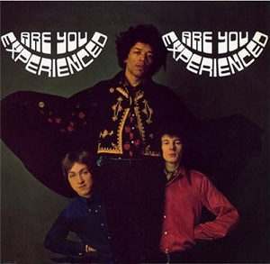

| Album | Year Released |
|---|---|
| Are You Experienced | 1967 |
| Axis: Bold as Love | 1968 |
| Electric Ladyland | 1968 |
| Band of Gypsys | 1970 |
Are You Experienced is the debut album by the rock band the Jimi Hendrix Experience. Released in 1967, the LP was an immediate critical and commercial success, and it is widely regarded as one of the greatest debuts in the history of rock music. The album features Jimi Hendrix's innovative approach to songwriting and electric guitar playing which soon established a new direction in psychedelic and hard rock music. Coming after three successful European singles, it helped introduce him as a new international star.